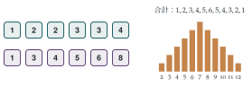

STEP I 1993、第1問
先に進む前に問題を読んでおこう。問題は STEP Support Programme の問題データベースにある： step.maths.org/questions/93-s1-q1
導入
2 個の 6 面サイコロに正の整数を書き込んで、\(2\) から \(12\) までのどの合計も普通のサイコロとちょうど同じ回数だけ出るようにする方法は、普通の書き方以外にあるだろうか。1978 年、マーティン・ガードナー（Martin Gardner）は『Scientific American』誌上で、そのような方法がちょうど 1 つだけあることを紹介した。\(1, 2, 2, 3, 3, 4\) と書かれたサイコロと、\(1, 3, 4, 5, 6, 8\) と書かれたサイコロの組である。これはジョージ・シッカーマン（George Sicherman）大佐が発見したもので、現在ではシッカーマンのサイコロ（Sicherman dice）として販売されている。このサイコロでモノポリー（Monopoly）を遊んでも、普通のサイコロで遊ぶのとまったく区別がつかない。
この問題は準備運動であり、合計の表から 2 個のサイコロにどのように数が書かれているかを推定するものである。これを系統的に行う方法も、シッカーマンのサイコロが唯一の風変わりな組であることの証明（proof）も、どちらも各サイコロを多項式（polynomial）に置き換えることから得られる。
取りかかる前に
1 個目のサイコロには \(i\) と書かれた面が \(p_i\) 面、2 個目のサイコロには \(j\) と書かれた面が \(q_j\) 面あるとする。合計 \(t\) を出す方法は何通りあるか。
その方法の数は \(\sum_i p_iq_{t-i}\) である。1 個目のサイコロの目 \(i\) を選ぶと、2 個目は \(t - i\) を出さなければならないからである。最初のサイコロの組では、合計 \(6\) は \(1 + 5\)（\(1 \times 1\) 通り）、\(2 + 4\)（\(2 \times 1\) 通り）、\(3 + 3\)（\(2 \times 2\) 通り）から得られ、それ以外はない。1 個目のサイコロには \(4\) も \(5\) もなく、2 個目には \(0\) がないからである。よって \(1 + 2 + 4 = 7\) 通りである。■
順を追って解く
段階 1 両端から
2 個のサイコロを \(A\), \(B\) とし、それぞれについて \(i\) と書かれた面の数を \(a_i\), \(b_i\) とする。
合計 \(2\) を出す方法も、合計 \(12\) を出す方法もない。このことから \(1\) の面と \(6\) の面について何がいえるか。合計 \(3\) を出す方法は 2 通りある。\(1\) の面をもつのはどちらのサイコロか。
合計 \(2\) が出ないことから \(a_1b_1 = 0\) である。すなわち、\(1\) の面をもつサイコロは高々 1 個である。合計 \(3\) は \(1 + 2\) か \(2 + 1\) でしか得られず、それが 2 通りあるので、どちらかのサイコロは確かに \(1\) の面をもつ。それを \(A\) とすれば \(b_1 = 0\) である。このとき \[\text{合計 } 3: \quad a_1b_2 = 2, \qquad\text{よって } (a_1, b_2) = (2, 1) \text{ または } (1, 2).\] 同様に、合計 \(12\) が出ないことから \(a_6b_6 = 0\) である。
段階 2 小さい合計から順に
\(b_1 = 0\) に注意して、合計 \(4\) についての式を書け。2 つの場合のそれぞれで、その式から何がわかるか。
合計 \(4\) は \(1 + 3\) または \(2 + 2\) であり（\(b_1 = 0\) なので \(3 + 1\) はありえない）、\(a_1b_3 + a_2b_2 = 1\) である。
場合 (a)：\(a_1 = 2\), \(b_2 = 1\) のとき、\(2b_3 + a_2 = 1\) より \(b_3 = 0\), \(a_2 = 1\)。
場合 (b)：\(a_1 = 1\), \(b_2 = 2\) のとき、\(b_3 + 2a_2 = 1\) より \(a_2 = 0\), \(b_3 = 1\)。
合計 \(5\)：\(a_1b_4 + a_2b_3 + a_3b_2 = 1\)。
場合 (a)：\(2b_4 + 0 + a_3 = 1\) より \(b_4 = 0\), \(a_3 = 1\)。ここまでで \(A\) は \(1, 1, 2, 3\)、\(B\) は \(2\) をもつ。\(B\) の残りの 5 面は \(5\) と \(6\) である。
場合 (b)：\(b_4 + 0 + 2a_3 = 1\) より \(a_3 = 0\), \(b_4 = 1\)。ここまでで \(A\) は \(1\)、\(B\) は \(2, 2, 3, 4\) をもつ。\(A\) の残りの 5 面は \(4, 5, 6\) のいずれかであり、\(B\) の残りの 2 面は \(5, 6\) のいずれかである。
段階 3 場合 (a) は成り立たない
場合 (a) について、合計 \(7\) の式を書き、\(b_5 + b_6 = 5\) を用いよ。
合計 \(7\)：\(a_1b_6 + a_2b_5 + a_3b_4 + a_4b_3 + a_5b_2 = 2b_6 + b_5 + 0 + 0 + a_5 = 3\)。\(b_6 = 5 - b_5\) を代入すると \(10 - b_5 + a_5 = 3\) となり、\(b_5 = 7 + a_5 \geq 7\) である。しかし \(B\) には 6 面しかない。よって場合 (a) はありえない。
段階 4 場合 (b) は成り立つ
場合 (b) について、合計 \(6\) と \(11\)、および \(a_6b_6 = 0\) を用いよ。
合計 \(6\)：\(a_1b_5 + a_4b_2 = b_5 + 2a_4 = 4\)（他の積は \(a_2 = a_3 = 0\) または \(b_1 = 0\) を含む）。\(b_5 \leq 2\) であり、\(b_5 = 4 - 2a_4\) は偶数なので、\(b_5 = 0, a_4 = 2\) または \(b_5 = 2, a_4 = 1\) である。
\(b_5 = 0\) ならば \(B\) は \(2, 2, 3, 4, 6, 6\) であるから \(a_6 = 0\) となり、\(A\) は \(1, 4, 4, 5, 5, 5\) である。しかしこのとき合計 \(7\) は \(a_1b_6 + a_4b_3 + a_5b_2 = 2 + 2 + 6 = 10\) 通りとなり、\(3\) 通りではない。
\(b_5 = 2\) ならば \(B\) は \(2, 2, 3, 4, 5, 5\) で \(b_6 = 0\) であり、\(A\) は \(1, 4\) と、\(5\) と \(6\) からなる 4 面である。合計 \(11\)：\(a_6b_5 = 2a_6 = 6\) より \(a_6 = 3\), \(a_5 = 1\)。
したがって、ありうるのは次のものだけである。 \[A:\ 1, 4, 5, 6, 6, 6, \qquad B:\ 2, 2, 3, 4, 5, 5.\] 最後に、これらのサイコロが表全体を与えることを確かめなければならない。ここまでの推論では合計の一部しか使っていないからである。実際に展開する（あるいは後述の多項式を用いる）と、表のすべての値が確認できる。■
振り返り
両端から始める。最小と最大の合計には積が 1 つか 2 つしか現れないので、最も強い情報が得られる。
場合分け（case analysis）をして、つぶしていく。合計を 1 つ調べるごとに可能性が絞られ、最後に 1 つの場合だけが残った。
十分性（sufficiency）を確かめる。推論によってサイコロがどうでなければならないかがわかり、最後の確認によってそれが実際に条件を満たすことがわかった。
背後にある数学
多項式としてのサイコロ
各サイコロを、\(i\) と書かれた面 1 つにつき項 \(x^i\) を 1 つもつ多項式として表す。普通のサイコロは \(x + x^2 + x^3 + x^4 + x^5 + x^6\) であり、問題のサイコロは \[A(x) = x + x^4 + x^5 + 3x^6, \qquad B(x) = 2x^2 + x^3 + x^4 + 2x^5.\] である。掛け合わせると、面の各組は \(x^ix^j = x^{i+j}\) を与えるので、\(A(x)B(x)\) における \(x^t\) の係数は合計 \(t\) を出す方法の数になる。これは再び第 9.4 節の母関数（generating function）の考え方である。合計の表はまさに積 \(A(x)B(x)\) にほかならず、先ほどの場合分けによる推論は、それを因数分解する一つの方法だったのである。
シッカーマンのサイコロ
普通のサイコロ 2 個の場合、積は \((x + x^2 + \cdots + x^6)^2\) である。合計が同じになるサイコロの組はどれも、\(P(x)Q(x) = (x + \cdots + x^6)^2\) を満たす多項式 \(P(x)\), \(Q(x)\) をもたなければならない。そこで因数分解すると \[x + x^2 + \cdots + x^6 = x(1 + x)(1 + x + x^2)(1 - x + x^2),\] となり、これらの因数は（整数係数の多項式として）これ以上分解できない。よって \(P\) と \(Q\) はそれぞれ因数 \(x\), \(1 + x\), \(1 + x + x^2\), \(1 - x + x^2\) から作られ、各因数は全体でちょうど 2 回ずつ現れる。次の 3 つの条件によって選び方が絞られる。
各サイコロは \(6\) 面をもつので \(P(1) = Q(1) = 6\) である。各因数は \(x = 1\) で値 \(1\), \(2\), \(3\), \(1\) をとるので、各サイコロは \(1 + x\) と \(1 + x + x^2\) を 1 つずつもつ。
\(0\) と書かれた面はないので \(P(0) = Q(0) = 0\) である。よって各サイコロは因数 \(x\) を 1 つずつもつ。
残る自由度は、2 つの \(1 - x + x^2\) をどう分けるかだけである。1 つずつ分ければ普通のサイコロになる。両方を一方のサイコロに入れると \[\begin{aligned} x(1 + x)(1 + x + x^2) &= x + 2x^2 + 2x^3 + x^4, \\ x(1 + x)(1 + x + x^2)(1 - x + x^2)^2 &= x + x^3 + x^4 + x^5 + x^6 + x^8. \end{aligned}\] となる。
これがシッカーマンのサイコロ \(1, 2, 2, 3, 3, 4\) と \(1, 3, 4, 5, 6, 8\) であり（図 9.6.1）、この議論によって、これが普通のサイコロ以外の唯一の組であることが証明される。鍵となる事実は、多項式も整数と同様に既約元（irreducible）の積へ一意に分解される（unique factorisation）ということである。ここで整数論と組合せ論が出会うのである。

確率論では、同じ考え方が確率母関数（probability generating function）として現れる。値 \(0, 1, 2, \ldots\) をとる確率変数（random variable）\(X\) に対して \(\mathrm{G}(t) = \mathrm{E}(t^X) = \sum \mathrm{P}(X = k)t^k\) と定め、\(X\) と \(Y\) が独立（independent）ならば \(\mathrm{E}(t^{X+Y}) = \mathrm{E}(t^X)\mathrm{E}(t^Y)\) が成り立つ。独立な確率変数の和は、母関数の積に対応するのである。STEP III 2003 Q14（演習問題にある）はこの方法でシッカーマンのサイコロを求めており、第 9.13 節では関連する議論を用いて、2 個のサイコロにどのような偏りをもたせても、すべての合計を同じ確率にすることはできないことを示す。
思考のスキル
対象が値の足し算によって組み合わさるときは、各対象を \(x\) の多項式で表せ。組み合わせることは掛け算になり、組み合わせについての問いは因数分解についての問いになる。
ここでは、サイコロについての問いが多項式の一意分解の問題になった。大学では、このような置き換えがいたるところに現れる。組合せ論にも、確率論にも、そして代数学にも現れる。代数学では、多項式は整数と似た算術をもつ環（ring）として、それ自体が研究対象となる。
次の一歩
四面体のサイコロ。STEP III 2003、第14問に挑戦せよ。これは 4 面のサイコロについてシッカーマンの問いを考えるものである。（ヒント：\(x + x^2 + x^3 + x^4 = x(1 + x)(1 + x^2)\)。）
表の確認。\((x + x^4 + x^5 + 3x^6)(2x^2 + x^3 + x^4 + 2x^5)\) を展開し、問題の表と照らし合わせよ。
3 個のサイコロ。正の整数が書かれた 6 面サイコロ 3 個で、すべてが標準のものではなく、合計の分布が標準のサイコロ 3 個と同じになるものは存在するか。（ヒント：今度は \((x + \cdots + x^6)^3\) の因数に \(1 - x + x^2\) が 3 つ含まれる。）
硬貨と八面体。\(1, \ldots, 8\) と書かれた 8 面サイコロと、\(1, 2\) と書かれた 2 面の「サイコロ」（硬貨）がある。合計が同じになるように、これらに別の数を書き直すことはできるか。
さらに学ぶために
Martin Gardner, Penrose Tiles to Trapdoor Ciphers（Mathematical Association of America）。シッカーマンのサイコロについてのコラムを収録している。
Joseph Gallian & David Rusin, 「Cyclotomic polynomials and nonstandard dice」（円分多項式と非標準的なサイコロ）、Discrete Mathematics 27 (1979)。任意の面数のサイコロについての一般論である。
Herbert Wilf, generatingfunctionology（オンラインで無料公開）、第 1 章。